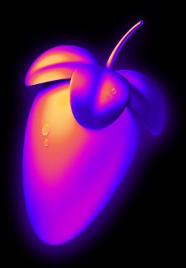
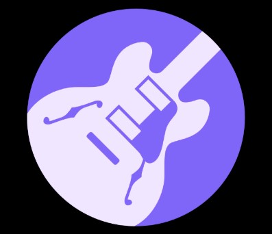

Piano : 14 years
Alto : 9 years
Guitare : 7 years
Drums : 6 years
Vocals : 10 years
I've been lucky enough to meet two composers, Sébastien Gaxie and Adrien Trybucky, with whom I've carried out several major concert projects in my high school and developed a number of personal projects, although I still work a lot on my own and I love that.
Soundtrap
FLStudio
Audacity
GarageBand
I try to share my knowledge as much as possible, and to inspire younger people, like my little sister, to take up music. But well... we'll have to wait until she finds the motivation and really understands the meaning of music.